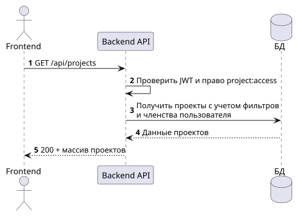

Возвращает список доступных пользователю проектов со сведениями об участниках.
Доступ: JWT и право project:access.
Используется в UC-1. Просмотр каталога и выбор проекта.
Схема работы


Алгоритм
Проверить право доступа и получить параметры
organizationIdиsearchиз запроса. ЕслиorganizationIdнельзя преобразовать в integer, игнорировать его. Удалить пробелы в начале и конце поисковой строки.Если у пользователя отсутствует право
project:create, ограничить список проектами, в которых он состоит. При наличии этого права возвращать проекты независимо от членства.Применить фильтр по
organizationId. Выполнить поиск без учета регистра по названию и описанию проекта, а также названию организации.Отсортировать проекты по названию организации, затем по названию проекта. Загрузить участников и определить для текущего пользователя значения
currentUserProjectRoleиcanManageMembers.Вернуть массив проектов без серверной пагинации.
Входные параметры
Параметры запроса (QUERY). Все параметры необязательны. Тело запроса отсутствует.
Поле | Тип | Описание |
|---|---|---|
| integer | Идентификатор организации для фильтрации |
| string | Поиск по названию и описанию проекта, а также названию организации без учета регистра |
Параметры page и pageSize не поддерживаются. Поле assignedUserId используется для внутренней фильтрации, но не принимается из QUERY-параметров.
Ответ
200 OK: возвращает массив проектов без общего количества записей.
Поля каждого элемента массива:
Поле | Тип | Описание |
|---|---|---|
| integer | Идентификатор проекта |
| integer | Идентификатор организации |
| string | Название организации |
| string | Название проекта |
| string, nullable | Описание проекта |
| array | Участники проекта, отсортированные по имени, затем по |
| string, nullable | Роль текущего пользователя: |
| boolean | Признак наличия роли |
| date-time | Дата и время создания проекта |
| date-time | Дата и время последнего изменения |
Элементы массива members
Поле | Тип | Описание |
|---|---|---|
| integer | Идентификатор участника |
| string | Логин пользователя |
| string | Имя участника |
| string | Электронная почта |
| string | Роль участника в проекте |
| date-time | Дата и время назначения участника |
Если доступные проекты отсутствуют, система возвращает 200 OK с пустым массивом [].
Право project:create дает доступ к просмотру проектов независимо от членства и принадлежности к организации. При этом значение canManageMembers не становится true автоматически.
В текущем интерфейсе поле серверного поиска отсутствует, но параметр search доступен клиентам API.
Ошибки
Код | Причина |
|---|---|
401 | Пользователь не авторизован |
403 | У пользователя отсутствует право |
Пример запроса
GET /api/projects?organizationId=1&search=Испытательный
Пример ответа
[
{
"id": 12,
"organizationId": 1,
"organizationName": "Организация примера",
"name": "Испытательный проект",
"description": "Провести испытания изделия.",
"members": [
{
"userId": 10,
"username": "manager",
"name": "Менеджер проекта",
"email": "manager@example.test",
"role": "manager",
"assignedAtUtc": "2026-11-09T09:00:00Z"
}
],
"currentUserProjectRole": "manager",
"canManageMembers": true,
"createdAtUtc": "2026-11-09T09:00:00Z",
"updatedAtUtc": "2026-11-09T09:00:00Z"
}
]